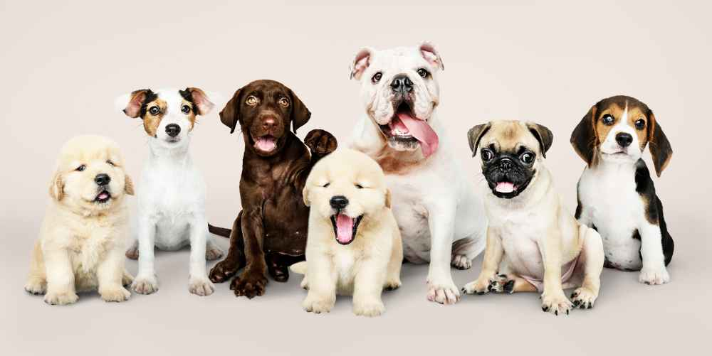
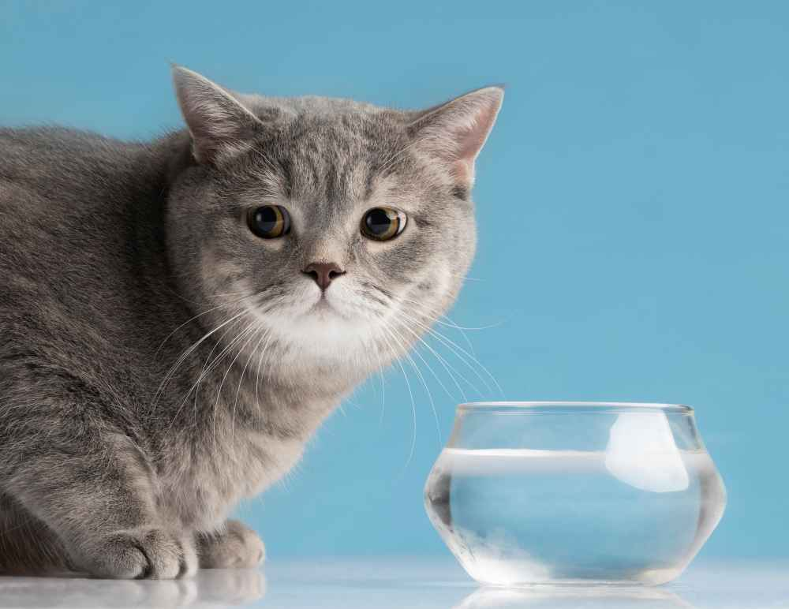
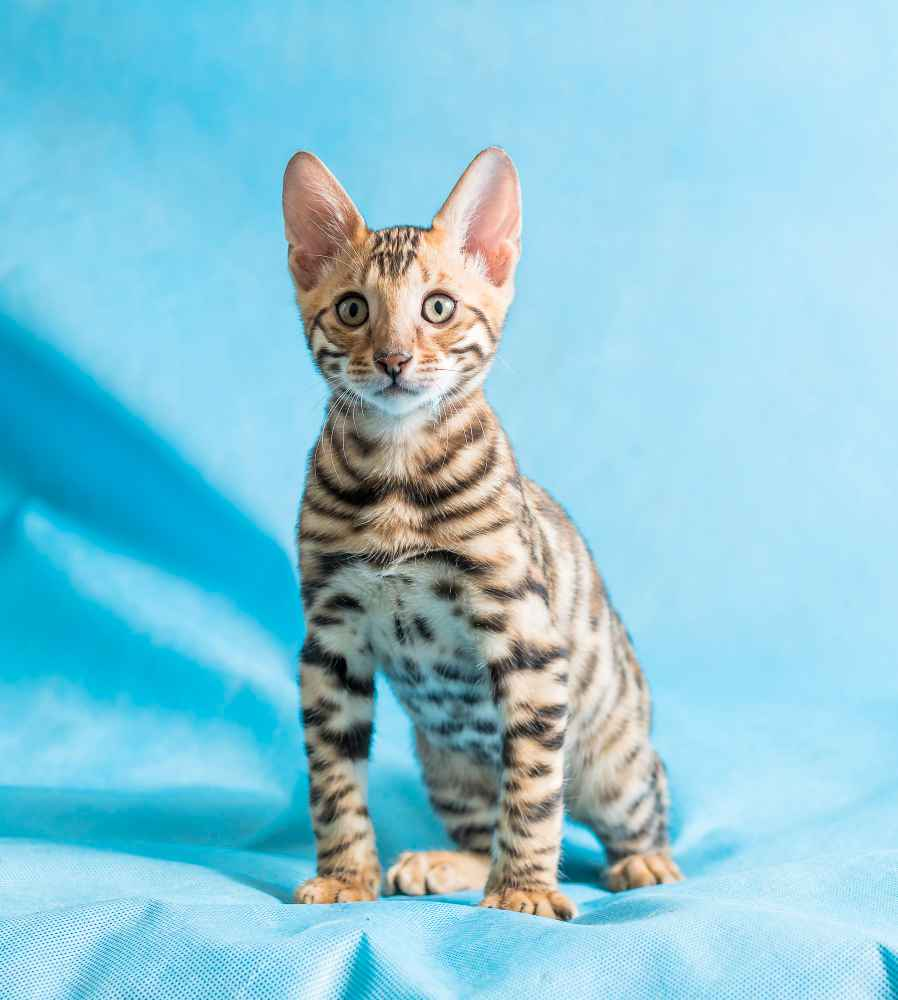
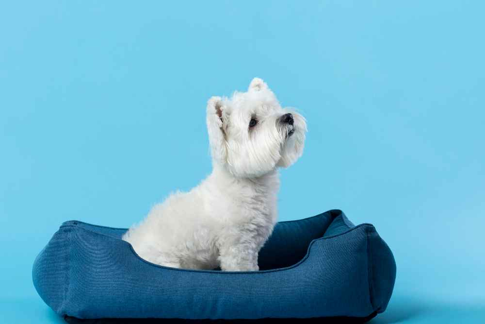
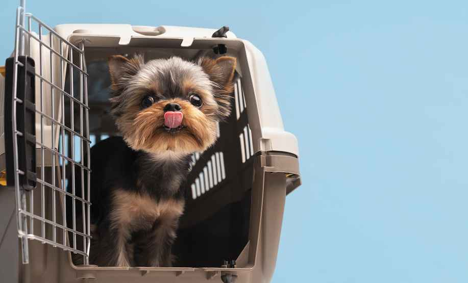

Our Animals
Adopt‐Me Pet Rescue & Clinic has made it their mission to find pets in need happy homes. Please take a look at the animals currenly available for adoption and consider giving one a home today! All fees listed include the cost of vaccination and any treatments received while in our care.

- Name: Whiskers
- Age: 9 months
- Breed:Unknown
- Adoption Fee:$100
- Wiskers is a great cat who need to be kept indoors since she has been declawed. Great with kids.

- Name: Felix
- Age: 6 months
- Breed:Bengal
- Adoption Fee:$150
- Felix is a very active and social cat. He will require a lot of attention and activity!

- Name: Daisy
- Age: 2 years
- Breed:Toy Terrior
- Adoption Fee:$250
- Daisy loves to run around, play, and take walks. Will need an active owner.

- Name: Buster
- Age: 2.5 years
- Breed:Bichon
- Adoption Fee:$250
- Buster is a very relaxed dog. Would do well with senior owners or families with children.